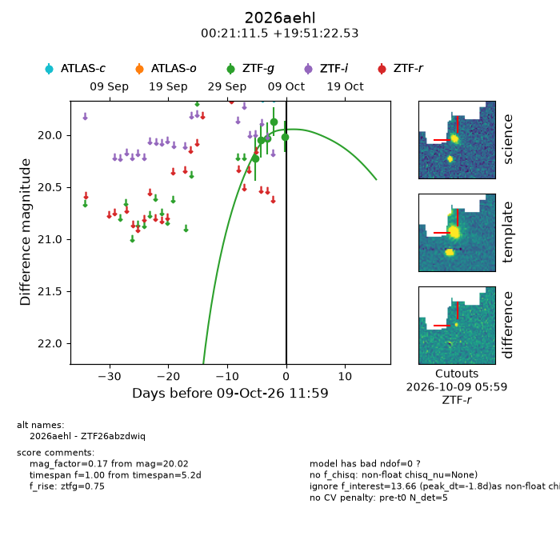
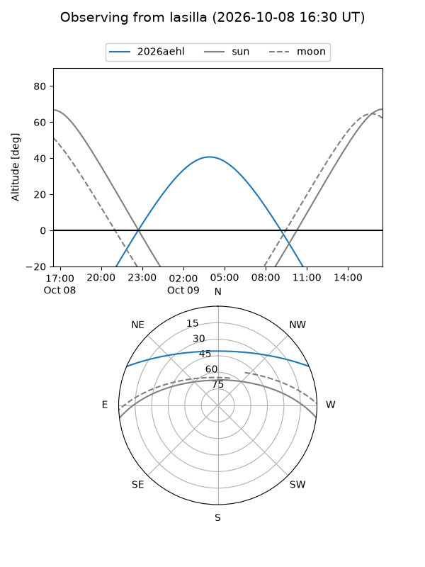
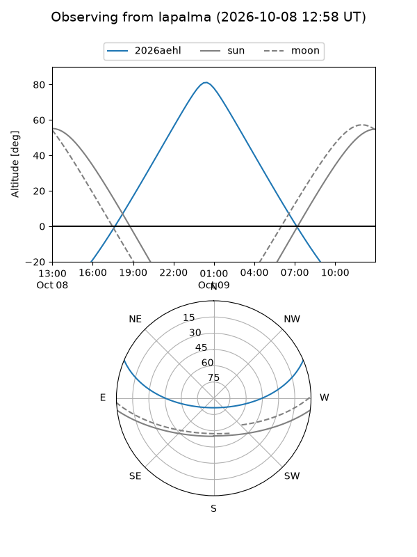
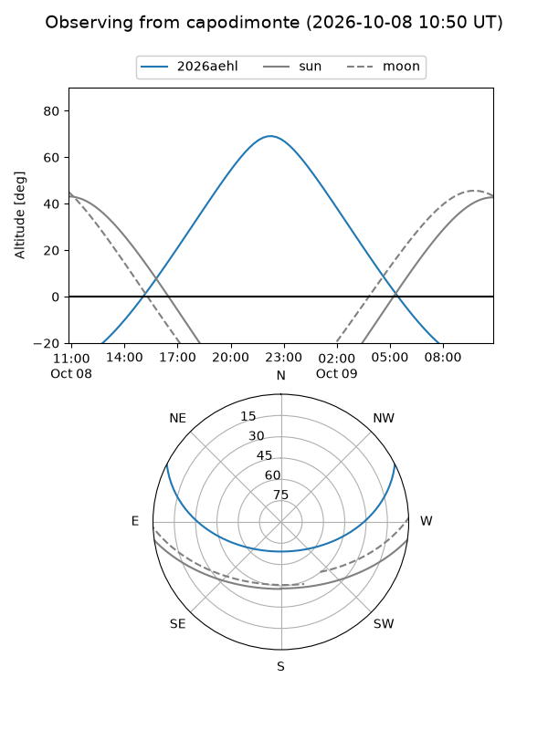
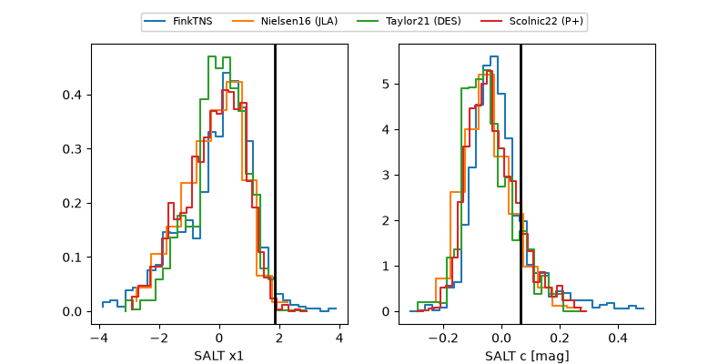

2026aehl
Target 2026aehl at 2026-10-09 12:01
Aliases and brokers:
FINK-ZTF: ztf.fink-portal.org/ZTF26abzdwiq
Lasair-ZTF: lasair-ztf.lsst.ac.uk/objects/ZTF26abzdwiq
ALeRCE-ZTF: alerce.online/object/ZTF26abzdwiq
YSE-PZ: ziggy.ucolick.org/yse/transient_detail/2026aehl
TNS name: wis-tns.org/object/2026aehl
Direct TNS query: direct search
alt names
ZTF26abzdwiq (ztf,fink_ztf)
2026aehl (tns,yse)
Coordinates:
equatorial (ra, dec) = 5.2980,+19.85626
equatorial (HMS+DMS) = 00:21:11.51,+19:51:22.53
galactic (l, b) = (113.2760,-42.44770)
Flags:
peak dt: -1.8
Photometry:
last ztfg=20.02
5 ztfg detections
Lightcurve

Visibility



Additional plots
